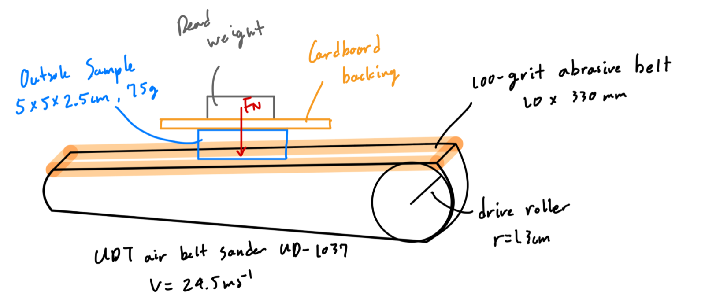
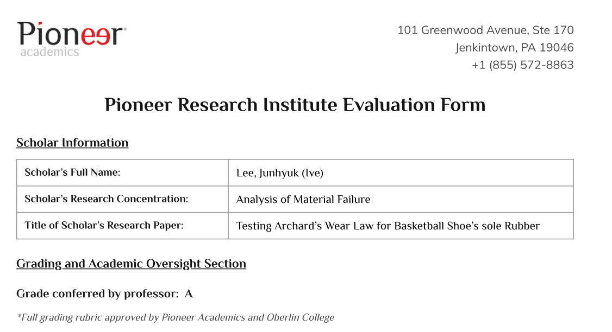
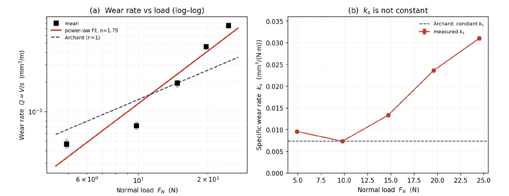

Research · Pioneer Research Institute · August 2026
Testing Archard’s wear law on basketball shoes
Does the outsole rubber of a basketball shoe wear down in proportion to the load on it, as Archard’s law predicts for metals?
- Researcher · Grades 11–12
- Graded A
- Submitted to the Pioneer Journal

Evaluation
Graded A, the highest grade
My research paper received a grade of A from my professor at the Pioneer Research Institute, under a grading rubric approved by Pioneer Academics and Oberlin College.

Aim of the study
Why outsole wear matters
A basketball shoe “wears out” long before it falls apart. As the outsole slides against the court, its tread edges round over and flatten, and the shoe loses traction, the property most strongly linked to athletic performance.
This kind of abrasive wear is usually described by Archard’s wear law: the volume of material removed grows in proportion to the load and the distance slid. But the law was developed for metals, and earlier studies on rubber disagree about whether it holds.
Research questionDoes the wear rate of basketball shoe outsole rubber increase linearly with normal load, and what specific wear rate, k, characterises it?
Methods
Sanding a Nike Zion 3 outsole
I cut samples of about 5 × 5 cm from the outsole of a Nike Zion 3, a 2023 signature shoe that combines a solid herringbone rubber with a translucent radial pattern.
Each sample, mounted on cardboard, was pressed onto a 100-grit belt sander with dead weights for 30 seconds. I weighed it before and after each trial and converted the lost mass into a specific wear rate using the rubber’s density (1.48 g/cm³, measured by water displacement). A fresh belt was used for every new load.
ks = Δm / (ρ · FN · s)
If Archard’s law holds, ks should be the same at every load.
Results
The wear rate was not constant
| FN (N) | Average Δm (g) | Q (mm³/m) | CV (%) | ks (mm³/(N·m)) |
|---|---|---|---|---|
| 4.9 | 0.051 | 0.047 | 7.5 | 0.0096 |
| 9.8 | 0.078 | 0.072 | 5.5 | 0.0073 |
| 14.7 | 0.213 | 0.196 | 4.9 | 0.0133 |
| 19.6 | 0.504 | 0.463 | 3.0 | 0.0236 |
| 24.5 | 0.827 | 0.760 | 2.9 | 0.0310 |

Discussion
Why rubber breaks the law
The outsole wore super-linearly: faster than the load increased. An exponent approaching three is typical of a harsher wear mode, where rubber is torn away in larger fragments once the stress at the raised tread points passes its resistance to tearing.
Archard’s law assumes the contact points deform plastically, like metal. Rubber deforms elastically and springs back, so the law’s central assumption doesn’t carry over.
The measured rates sit in the upper range recorded for elastomers. That fits a coarse sanding belt and a fairly soft compound (about 77 Shore C).
Limitations and conclusion
What the study can and can’t say
Limitations
The biggest gap is surface temperature, which I didn’t measure. Friction heating grows with load, and warmer rubber wears more easily, so heat alone could produce a similar super-linear trend. The study also used one belt speed and one abrasive, and assumed every sample had the same true contact area.
Conclusion
Across the loads tested, the Zion 3 outsole did not wear in proportion to the force on it, so Archard’s law is rejected under these conditions and a single wear rate can’t predict its durability. These are the first specific wear rate measurements for a basketball outsole compound, and they show that a simple experiment can reveal the trend. Measuring temperature is the priority for future work.